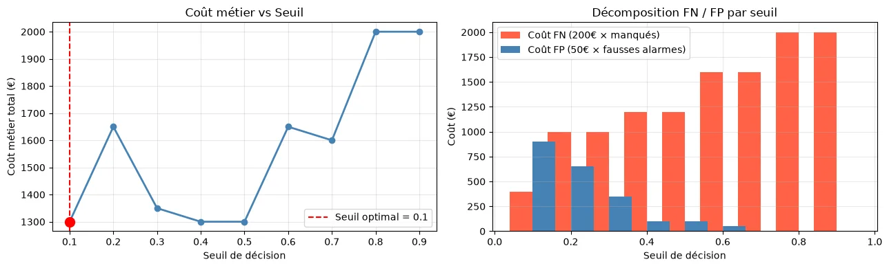
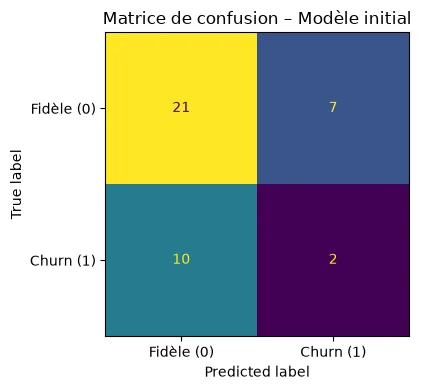

Tous les projets
// Projet
Orbitel / ChurnStop
Prédiction du churn
Machine Learning
-45 %
coût total (2 350 € → 1 300 €)
10 / 12
churners détectés, contre 2
0,357 → 0,696
AUC
Contexte
Un modèle interne de prédiction du churn détectait 2 départs sur 12 et ne convergeait même pas.
Un faux négatif (client perdu non détecté) coûte 200 €, un faux positif (action de fidélisation inutile) 50 €. Optimiser l'AUC seule ne reflète pas ce coût.
Démarche
- Diagnostic du modèle initial : AUC 0,357, coût 2 350 €, dont 85 % dû aux faux négatifs.
- Correction : normalisation, convergence assurée, pondération des classes (31 % de churners).
- Feature engineering : variable « frustration » (plus de 5 réclamations et satisfaction inférieure à 2,5). Dans l'échantillon d'entraînement, 100 % des clients frustrés sont partis.
- Optimisation du seuil de décision entre 0,1 et 0,9 pour minimiser le coût total, puis restitution à un manager non technique.
- Random Forest testé en alternative et écarté : il classait tous les clients comme churners.
En images




Cliquez sur une image pour l'agrandir.
Résultats
| Modèle | AUC | Faux négatifs | Faux positifs | Coût |
|---|---|---|---|---|
| Modèle initial (seuil 0,5) | 0,357 | 10 | 7 | 2 350 € |
| Régression logistique corrigée | 0,542 | 11 | 4 | 2 400 € |
| + frustration, seuil 0,1 (retenu) | 0,696 | 2 | 18 | 1 300 € |
- Coût total réduit de 45 % : 2 350 € à 1 300 €.
- 10 churners détectés sur 12, contre 2 au départ.
- Prédictions produites sur 40 nouveaux clients.
Ce que j'en retiens
- Le meilleur modèle n'est pas celui qui a le meilleur score technique, mais celui qui coûte le moins à l'entreprise. Ici, accepter plus de fausses alertes est rentable.
- Limite assumée : 105 observations d'entraînement et 40 de test, donc des résultats à confirmer sur un volume plus grand.
Rapport et code
Tous mes dépôts : github.com/payebie